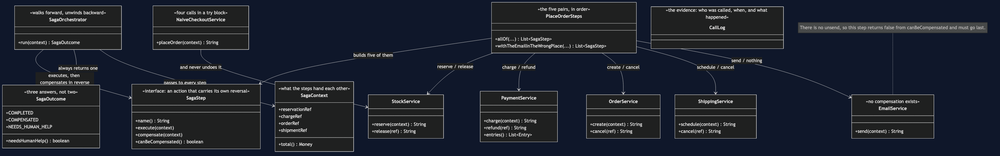
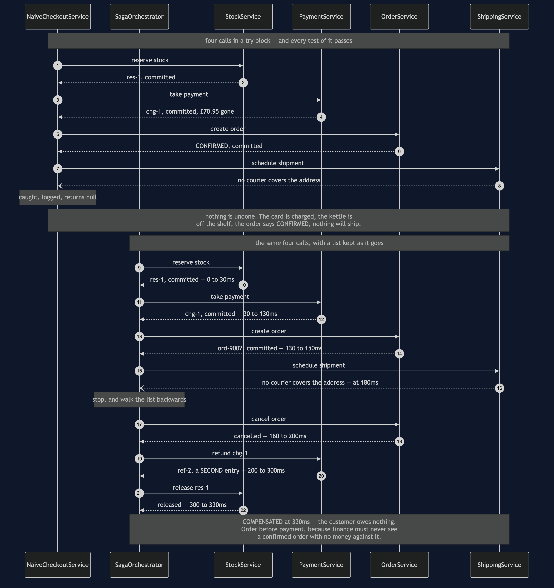
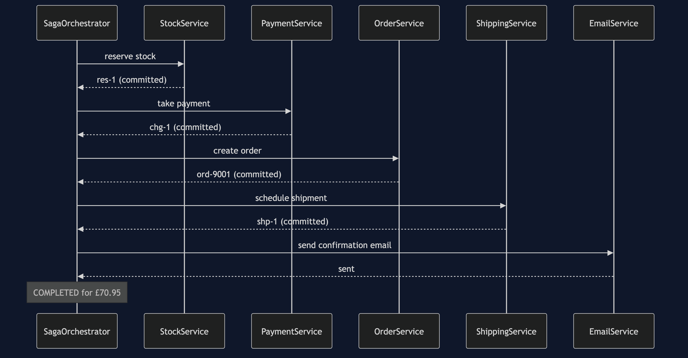
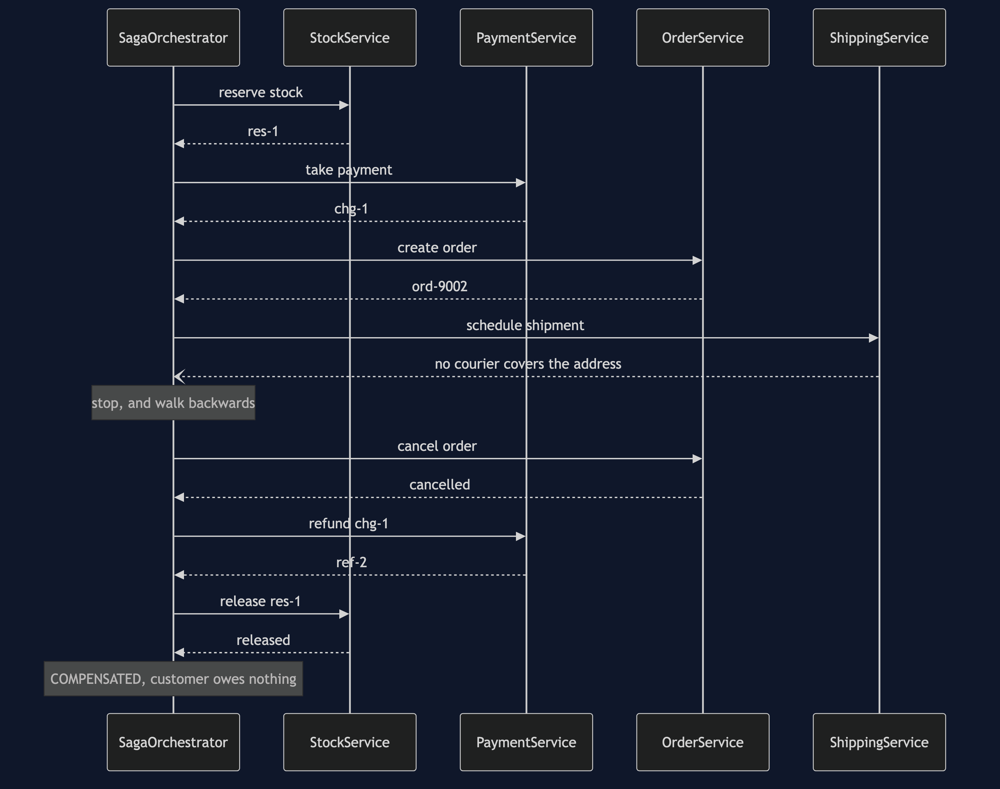
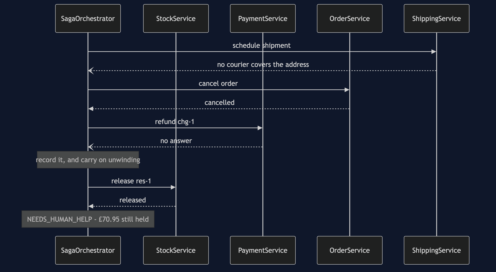
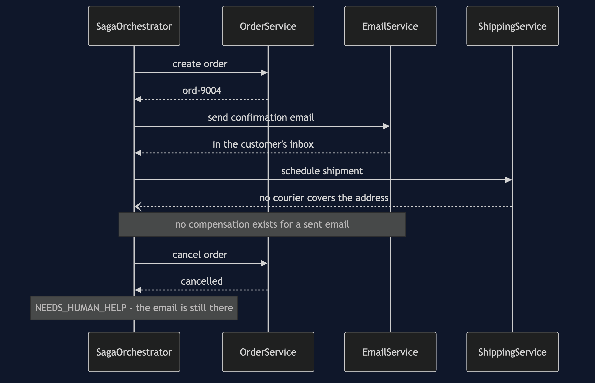
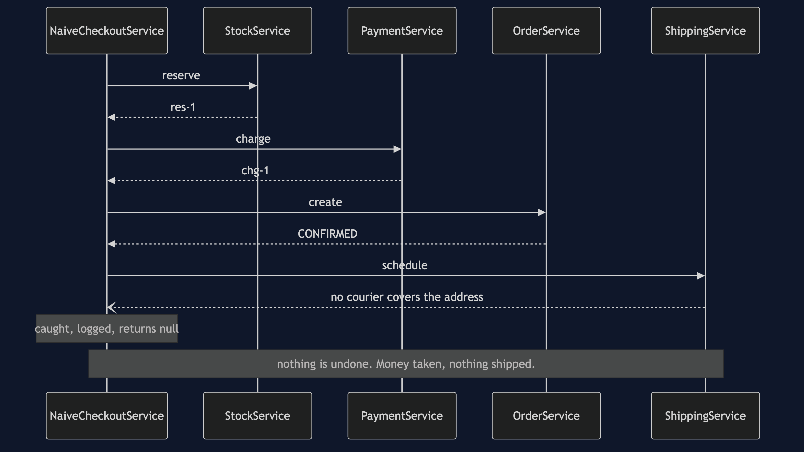

Saga
In plain words: a job that spans several services is done as a series of small steps, each of which commits on its own. There is no undo button, so every step is written together with an action that cancels out its effect, and if a later step fails the earlier ones are cancelled out in reverse order.
Everyday analogy: booking a holiday — a flight, a hotel and a hire car, from three different companies. Each booking is confirmed the moment you make it; there is no way to hold all three "pending" until you are sure of the third. So when the car company turns you down, nobody rewinds time. You ring the hotel and cancel, and you ring the airline and cancel. That is the idea people most often miss about this pattern: a cancellation is not the booking being erased. It is a new event, it may cost you a fee, and it can itself fail — the hotel might not pick up the phone.
In the shop, placing an order reserves stock, takes payment, creates the order, schedules a shipment and emails the customer. Five services, five databases, and no transaction that spans any of them.
Five steps, five commits
0ms -> 30ms Stock OK res-1
30ms -> 130ms Payments OK chg-1
130ms -> 150ms Orders OK ord-9001
150ms -> 210ms Shipping OK shp-1
210ms -> 250ms Email OK emailed cust-7
250ms -> 250ms Saga COMPLETED ord-9001 for £70.95By the time payment is taken, the stock reservation is already committed and visible to everybody. There is no point in the run where the five services agree to hold their breath. That is not a shortcoming of this code — it is what having five databases means.
When the fourth step refuses
150ms -> 150ms Saga STEP-OK create order
180ms -> 180ms Saga STEP-FAILED schedule shipment: no courier covers ...
180ms -> 200ms Orders OK cancelled ord-9002
200ms -> 300ms Payments OK refunded chg-1
300ms -> 330ms Stock OK released res-1
330ms -> 330ms Saga COMPENSATED everything undone, customer owes nothingSagaOrchestrator.run is the whole pattern and it is about fifteen lines: walk the steps forward keeping a list of the ones that succeeded, and if one throws, walk that list backwards calling compensate.
Backwards is not tidiness. Later steps depend on earlier ones, so they have to come apart in the opposite order — the order is cancelled before the payment is refunded, or finance is briefly looking at a confirmed order with no money against it.
SagaStep is the same shape as the Command pattern's execute and undo, and reading it that way is the fastest route in. Two differences matter, and both are about the network: this undo crosses a wire, so it can fail; and it does not restore a snapshot, it performs a new action.
Compensation is not rollback
CHARGE £70.95 chg-1
REFUND -£70.95 ref-2Two lines, not zero. PaymentService.refund never deletes the charge — it adds a second, negative entry, exactly as a real payment provider does. So the customer's statement shows the money leaving and coming back, and they may well ring up to ask why. A database rollback would never have created that support call.
This is why aRefundIsANewFactNotAnErasure asserts two ledger entries rather than an empty ledger. Everything downstream inherits it: cancelling an order sets its state to CANCELLED rather than deleting the row, because the customer saw that order and finance will report on it.
The order of the steps is a design decision
Stock is reserved first because releasing it is the cheapest and most reliable compensation in the set. Payment comes before the order exists, so a declined card costs nothing but a released reservation — anEarlyFailureIsCheap pins that down. The general rule: the steps most likely to fail go early, while there is least to undo.
Some steps cannot be compensated at all
outcome: ord-9004: schedule shipment failed and could not undo [send confirmation email]
emails in the customer's inbox: 1
"your order ord-9004 is confirmed"SendConfirmationEmail.canBeCompensated() returns false and its compensate is deliberately empty, because there is no unsend. That is not a bug to be fixed; it is a fact about the world, and the only thing a saga can do with it is put such a step last, after everything that might fail. PlaceOrderSteps.withTheEmailInTheWrongPlace exists to be shown failing: move the email up one place and a later refusal leaves the shop having promised in writing something it must then take back.
When the undo fails too
200ms -> 300ms Payments FAILED no answer
300ms -> 300ms Saga UNDO-FAILED take payment: Payments did not answer
300ms -> 330ms Stock OK released res-1
330ms -> 330ms Saga NEEDS-HUMAN could not undo [take payment]This is the case most saga tutorials leave out, so SagaOutcome has three values rather than two. NEEDS_HUMAN_HELP means the shop is holding money it should not, and no code in this project can fix it. Two things to notice: the unwinding carried on after the failure, cancelling the order and releasing the stock anyway, and the outcome names the step it could not undo. In a real shop that outcome is a row in a queue that a person works through. Not building the queue does not make the case go away — it only removes your chance of finding out.
Orchestration, and the alternative
SagaOrchestrator is an orchestrator: one class holds the sequence, so the sequence can be read in one file and tested in one file. The price is that it knows about all five services.
The alternative is choreography: no one is in charge, each service publishes an event and the next reacts to it. That couples the services more loosely, and it means nobody can answer "what happens when an order is placed?" without reading five codebases — including, crucially, the person trying to work out why a compensation did not run. For a flow this important, being able to read it in one place is usually worth more than the looser coupling.
The try block everybody writes instead
returned: null
card charged: £70.95
kettles still reserved: 1
order state: CONFIRMED
shipments scheduled: 0NaiveCheckoutService makes the four calls in a row inside a try. Every test in NaiveCheckoutServiceTest passes, and that is the lesson: nothing threw. The card was charged, the kettle is off the shelf, the order says CONFIRMED, nothing will ever ship, and a line went into a log that somebody reads three weeks later while investigating a complaint.
A @Transactional annotation on that method — where the comment sits in the source — is the most dangerous thing you could add. It does exactly what it says: it wraps the method in a transaction on this service's own database. It has no reach into Stock's database, none into Payments, and none at all over the card network. Rolling back a transaction that never touched the money does not bring the money back.
One JVM, no infrastructure
No Spring, no broker, no database, no sockets, and nothing sleeps. SimulatedClock advances only when a call is made, so the timelines above are exact and free. RemoteCall.failNext scripts an outage; refuseEveryPostcode and declineEverything script a refusal, which is a different thing and must not be retried. The saga's state lives in SagaContext; in a real shop that would be a row written after every step, so the saga could be picked up again if the process running it died mid-way.
Technologies and versions
Nothing here is a range and nothing is latest: a course that worked last year and does not work today is worse than one that never took the dependency.
| What | Version | Why it is here |
|---|---|---|
| Java | 21 | The repository standard, requested through the Gradle toolchain block |
| Gradle | 9.2.1 | The wrapper in this directory; no separate install needed |
| JUnit 5 | 5.10.2 | The 24 tests, through junit-bom so the Jupiter artefacts cannot disagree |
That is the entire list, and the short version of it is the point. This project has no runtime dependency at all — the dependencies block in build.gradle names nothing but JUnit, and JUnit is testImplementation. There is no Spring, no broker, no database, no transaction manager and no container; the orchestrator is a loop over a list, and the five services each hold a map. Every one of the twelve projects in this category is built the same way, so a reader who can run one can run all of them, offline, with a JDK and nothing else.
Learning Material
| Document | What it covers |
|---|---|
docs/problem-statement.md | Four calls in a try block, and the customer who paid for a parcel that will never be sent |
docs/saga-pattern-explained.md | The holiday booking, the five acts, and the three costs of undoing that most treatments skip |
docs/class-diagram.md | The step, the orchestrator, the outcome, and the one service with no compensation |
docs/architecture-diagram.md | What each step commits to, what undoing it actually means, and why the email is last |
docs/data-flow-diagram.md | The list of successful steps, the three endings, and why a failed undo does not stop the unwinding |
docs/sequence-diagram.md | The same failure at 180ms with and without a saga — identical first halves, and only one second half |
docs/uml-diagram.md | All five acts as sequences: the happy path, the unwinding, the failed undo, the email, and no saga at all |
docs/animation.html | Five steps committing one at a time in a browser, and then being walked backwards |
docs/prerequisites.md | What you need to know, what you explicitly do not (two-phase commit, any broker), and 60-second primers |
docs/session.md | A one-hour taught session with exercises |
docs/spec.md | The generated specification, with measured test counts and timings |
docs/youtube.md | Title, description and chapters for the video |
video/README.md | The video pipeline, the scene list, and how to rebuild it |
The pattern in one picture
The class diagram — the step, the orchestrator, the outcome. The thing to look for is that compensate sits on the same interface as execute, which is the pattern's one real demand: you may not write a step without writing its undo at the same time.

What runs where
The lower half is the literal truth: one JVM, a list and a loop. The upper half is the checkout across five services, each step labelled with what undoing it actually means — including the one where the honest answer is that there is no undo.

How the data moves
The list of steps that succeeded, walked forward and then backward, with the three endings it can reach. Note the branch where an undo fails and the unwinding carries on anyway.

Who calls whom, in order
The same checkout failing at the same step, with and without a saga. The first halves are identical; only one of them has a second half.

All five acts
The full set from docs/uml-diagram.md, in the order that document argues them.
One. Five steps, no transaction. Every arrow back says committed, and nothing is being held open for anybody.

Two. The courier refuses, and everything unwinds. The bottom half is the exact reverse of the top half, and the order matters.

Three. The refund fails too. The stock is still released, and the outcome names the step it could not undo.

Four. The email in the wrong place. The order is cancelled, the money comes back, and the confirmation stays in the inbox.

Five. The same failure, without a saga. There is no second half to this diagram, and that is the whole comparison.

Video
The narrated walkthrough is built from video/scenes.py by video/build_video.sh. It runs about eighteen minutes across sixteen scenes, and the rendered file is not committed — see the repository README for why — so producing it takes about ten minutes on macOS.